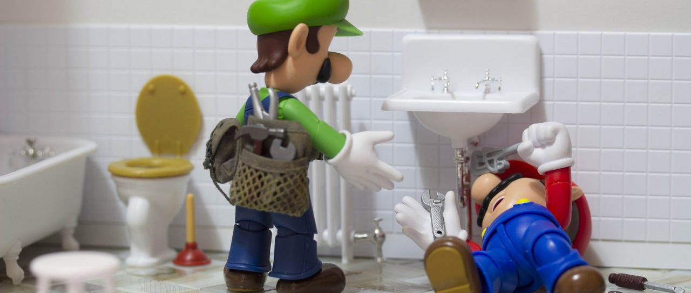

Servicios Destacados

Fontaneros
Ofrecemos servicios de fontanería de alta calidad para resolver tus problemas de plomería.
Ver másProfesores de programación
Aprende programación de la mano de nuestros expertos. Te ayudamos a dominar los lenguajes de programación más populares.
Ver más
Diseñadores gráficos
Creamos diseños únicos y atractivos para tu marca o proyecto. Déjanos dar vida a tus ideas visuales.
Ver más